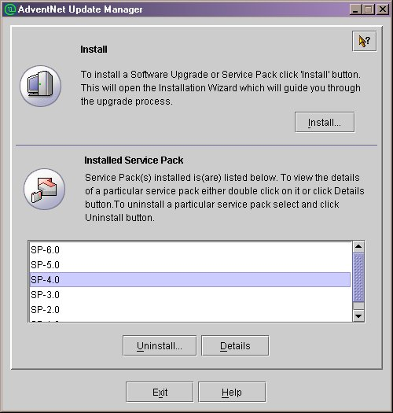
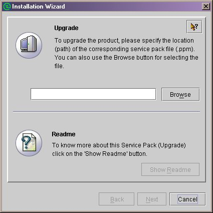
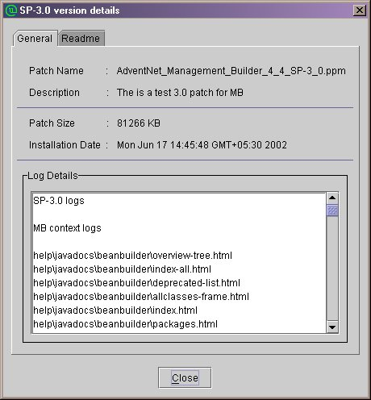
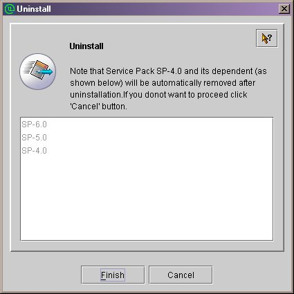

Update Manager
The Update Manager is a tool which is used for installing the service
packs (.ppm file) over a product. The service pack may contain certain
bug fixes and new feature additions for a particular release version of
the product.
NOTE: The Update Manager is a contribution from AdventNet.
It is meant only for development usage within XMOJO project.
For more details, contact
support@adventnet.com
The service pack can be classified to be either an ordinary
without referring to any context of the product (Non - Context based) or
it may be context based. This document explains about how to use the Update
manager for installation of Software upgrades in AdventNet products. It
can be also used by products developed over these products.
Context based patch implies that the patch will have the consolidated
upgrades for all the different components of the same product.
The same patch can be used for updating any context of the product. The
Update manager also provides a feature for having Mandatory context and
Optional contexts. The Mandatory context can also be called compulsary
context and will not be displayed at the time of installation. An Optional
context is some additional upgrades, but is not absolutely necessary for
the product to function.
The Update Manager also has some useful validation incorporated. This
validation includes compatability checks. If a service pack is not compatable
ie., service pack of one product is installed in other product , or service
pack of one product version installed in other version , then update manager
will not allow the user to install these types of service packs.
To open the Update Manager tool run the "UpdateManager.bat/sh" file
present in the <product home>/bin directory. The Update manager
UI lists the different versions of service pack installed for this
product. The details of each of the service packs can be viewed by selecting
the corresponding item in the list and clicking the details button.

The Update manager can be operated in two modes ie., UI and non-UI mode.
For starting the update manager in command line or non-UI mode, there are
two ways.
-
Run the UpdateManager.bat/sh file with -c as a command line argument.
-
The user has to edit the script file ie., UpdateManager.bat or UpdateManager.sh
depending on the OS. The change required is very simple, just an addition
of one more argument -c (%JAVA_HOME%\bin\java -Xmx100m com.adventnet.tools.update.installer.UpdateManager
-u conf -c).
Update Manger UI
The main features of the Update Manager UI are:
To install the service pack.
During the installation of a patch, the corresponding files related
to bug fixes are updated inside the product installation directory according
to the respective file locations.
-
Click the Install button to start installation procedure. The installation
wizard will popup.

-
Use the browse button to give the service pack file (.ppm). Once this file
is given, the View Readme button will get enabled. Only compatible service
pack file will be opened.
-
On clicking the View Readme button the readme file related to this service
pack is displayed in a seperate window.
-
On clicking the next button the various optional contexts available are
displayed for selection. The user can select the context required and click
install button.
-
When install button is clicked a new panel is displayed giving details
of service patch and progress in installation.
The tool will intimate the user on completion of the installation process.
To view Installed Service
pack details
The installed service packs are listed in the main window of the Update
manager.
-
The details can be viewed by selecting the service pack version and clicking
the Details button. The following screen will be shown.

-
A dialog pops-up displaying the General details about the patch in a tab.
It contails the patch name, description, installed size and installation
time.
-
The installation log messages are shown below these details.
-
The other tab displays the README related to this Service pack.
-
The details can also be viewed by double clicking the required service
pack version.
To Uninstall a service pack
To uninstall the service pack:
-
Select the version from the list shown. Then click on the Uninstall button.
The following screen will be shown.

-
This will bring up a dialog which shows the service pack to be uninstalled.
It also lists all the related service packs that will be uninstalled.
-
On clicking the Uninstall button the status screen is displayed, which
shows the progress in uninstallation.
Update Manager in Command line
The main features of the Update Manager command line are:
To install the patch through
command line
-
On invoking the update manager in command line mode, it will as the user
to select a option.
-
For installation enter i and press enter.
-
The update manager will prompt for Service pack file name. Here enter the
full path of the .ppm file.
-
If Optional contexts are available in the Service pack the the Update manager
will ask the user wether he/she wants to install them. On selecting to
install the optional context , the list of contexts are printed in the
console. Now one can select the contexts required.
Now the Update Manager will start the installation process.
To uninstall a service pack using
command line
-
On invoking the update manager in command line mode, it will as the user
to select a option.
-
For installation enter u and press enter.
-
The tool will request to user to select the version to Uninstall. Here
the user will have to enter the serial number of the version to be uninstalled.
Now the Update Manager will start the Uninstallation process.